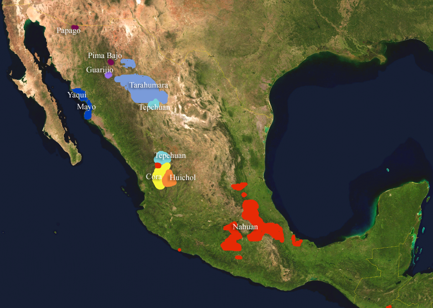

ROCKERCOATL - Song unnamed
(Let’s face it, you weren’t coming anyways.)
HW6 is beefy.
We’ll have a review session during the last week of class
Any questions or comments? Surprises?
Note how many theoretical points were up to debate
“Well, we’re not entirely sure what this marks”
This is what languages look like when you zoom in!
Uto-Aztecan Languages
Mayan Languages
Agreement vs. Case

Spoken in the US and in Mexico
30 languages
One of the larger families in North America
| ### Prominent Uto-Aztecan Languages |
| * Nahuatl - ~1.5 million speakers |
| * Tarahumara - ~45,000 speakers * We’ll talk about Tarahumara Monday |
| * Huichol - ~17,000 speakers |
| * Tepehuan - ~16,000 speakers |
| * Pima - ~15,000 speakers |
| * Hopi - 7000 speakers |


| ### Montezuma has a county in Colorado |
 |

Seriously, Colorado?

Coyote (from coyōtl)
Mesquite (from mizquitl)
Peyote (from peyōtl)
Tomato (from tomatl)
Chocolate (from xocolātl ‘bitter water’)
Chili (from chīlli)
Avocado (from āhuacatl)
Guacamole (āhuacamōlli ‘Avocado Sauce’)
Tamale (from tamalli)
Chipotle (from chilpoctli ‘smoked chili’)

Here’s a picture of a gerbil in a sweater, because I can’t think of a transition.

| ## Mayan Languages |

Spoken in Central America
Really well documented
Around 6 million speakers


Nova did a whole special on this.
(Modern Mayan languages use the Latin alphabet, though)
Agglutinating and Polysynthetic
VOS ordering
Numerical Classifiers
Relational Nouns!
A noun used to express prepositional meaning
Mnnààa’ zuu zh:ààa’n bzêiny.
woman NEU.stand the.buttocks.of deer
‘The woman is standing at the buttocks of the deer’
| u-wach ulew |
| it-face earth |
| “on the earth” |
loh gyizhi’iilly
face chair
‘on the chair’
‘Squirrel in bus’
’Squirrel bus.LOCATIVE-CASE
‘squirrel stomach bus’
‘squirrel entered bus’
‘Squirrel in bus’
’Squirrel bus.LOCATIVE-CASE

(Sorry, I needed a segue!)

| ### Will-NOM see-3sg CAT-ACC |


Yo veo el gato
1sg see.1sgsubj el cat
I see the cat
The arguments aren’t marked
… but the verb lets us know who did it!
Michael Bay hizo peliculas malas
Michael Bay make.3sgsubj.past movie-pl bad-pl
“Michael Bay made bad movies”
We know that the plural argument did it!
Person marking (1sg, 2sg, etc)
Number marking (singular, plural, etc)
Gender marking (masc, fem, neuter)
Noun class
New vs. old information markers
squirrele eta acornu
squirrel.NOM eat acorn.ACC
“The Squirrel ate the Acorn”
“This is case”
“This is agreement”
kula-knas Michael Bay Will
judge-object.is.evil Michael Bay Will
“Will judges Michael Bay”
“This is case”
“This is agreement”
Word Order
Case
Agreement
Spanish uses word order and agreement
Russian uses agreement and case
English uses agreement, word order, and case.
(When more than one is used, it’s usually because the first system isn’t quite robust enough)
Uto-Aztecan languages are awesome
Mayan languages are awesome
Agreement and case are different